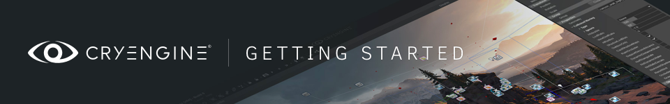

CRYENGINE Из Unity
В этом руководстве представлен обзор интерфейса CRYENGINE V с точки зрения пользователя Unity. В этом руководстве мы рассмотрим основные различия между Unity и CRYENGINE и обсудим, как перенести существующие ресурсы в CRYENGINE из Unity. Мы сосредоточены на использовании поддержки C# в CRYENGINE, поскольку она будет наиболее похожа и подходит для пользователей Unity, однако большая часть содержимого этого руководства применима и к проектам C++.